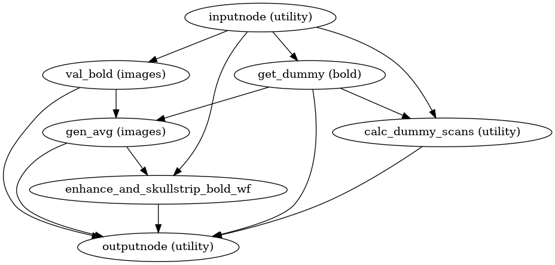
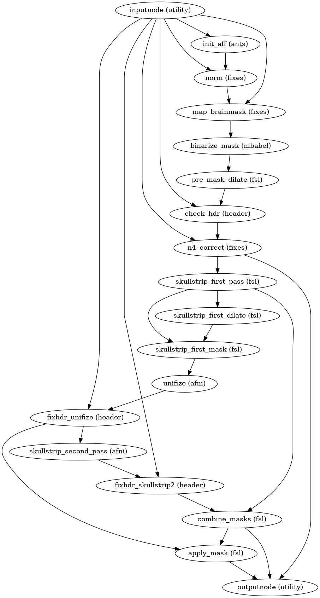
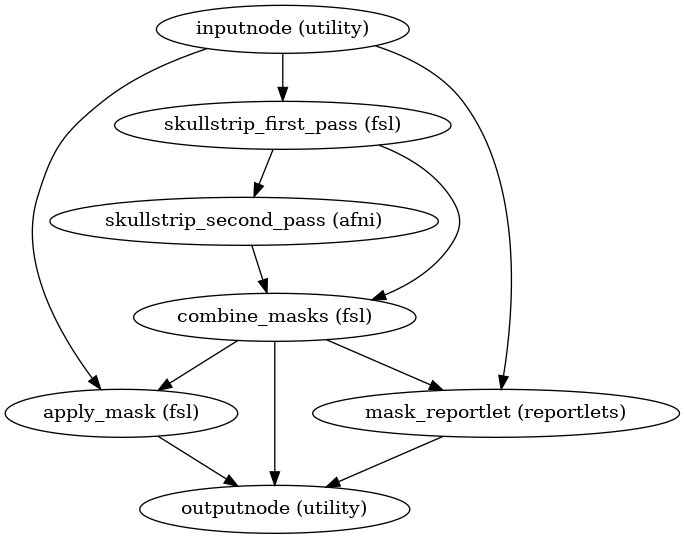

niworkflows.func.util module¶
Utility workflows.
-
niworkflows.func.util.init_bold_reference_wf(omp_nthreads, bold_file=None, sbref_files=None, brainmask_thresh=0.85, pre_mask=False, multiecho=False, name='bold_reference_wf', gen_report=False)[source]¶ Build a workflow that generates reference BOLD images for a series.
The raw reference image is the target of HMC, and a contrast-enhanced reference is the subject of distortion correction, as well as boundary-based registration to T1w and template spaces.
LIMITATION: If one wants to extract the reference from several SBRefs with several echoes each, the first echo should be selected elsewhere and run this interface in
multiecho = Falsemode. In other words, SBRef inputs are assumed to be single-echo.LIMITATION: If a list of SBRefs is provided, each can be 3D or 4D, but they are assumed to be sampled in the exact same 3D-grid and have the same orientation information in their headers so that they can directly be merged into a 4D volume.
- Workflow Graph
- 
(Source code, png, svg, pdf)
- Parameters
omp_nthreads (
int) – Maximum number of threads an individual process may usebold_file (
str) – BOLD series NIfTI filesbref_files (
listorbool) – Single band (as opposed to multi band) reference NIfTI file. IfTrueis passed, the workflow is built to accommodate SBRefs, but the input is left undefined (i.e., it is left open for connection)brainmask_thresh (
float) – Lower threshold for the probabilistic brainmask to obtain the final binary mask (default: 0.85).pre_mask (
bool) – Indicates whether thepre_maskinput will be set (and thus, step 1 should be skipped).multiecho (
bool) – If multiecho data was supplied, data from the first echo will be selectedname (
str) – Name of workflow (default:bold_reference_wf)gen_report (
bool) – Whether a mask report node should be appended in the end
- Inputs
bold_file (str) – BOLD series NIfTI file
bold_mask (bool) – A tentative brain mask to initialize the workflow (requires
pre_maskparameter setTrue).dummy_scans (int or None) – Number of non-steady-state volumes specified by user at beginning of
bold_filesbref_file (str) – single band (as opposed to multi band) reference NIfTI file
- Outputs
bold_file (str) – Validated BOLD series NIfTI file
raw_ref_image (str) – Reference image to which BOLD series is motion corrected
skip_vols (int) – Number of non-steady-state volumes selected at beginning of
bold_filealgo_dummy_scans (int) – Number of non-steady-state volumes agorithmically detected at beginning of
bold_fileref_image (str) – Contrast-enhanced reference image
ref_image_brain (str) – Skull-stripped reference image
bold_mask (str) – Skull-stripping mask of reference image
validation_report (str) – HTML reportlet indicating whether
bold_filehad a valid affine
- Subworkflows
init_enhance_and_skullstrip_wf()
{kind=link}
{kind=link}
-
niworkflows.func.util.init_enhance_and_skullstrip_bold_wf(brainmask_thresh=0.5, name='enhance_and_skullstrip_bold_wf', omp_nthreads=1, pre_mask=False)[source]¶ Enhance and run brain extraction on a BOLD EPI image.
This workflow takes in a BOLD fMRI average/summary (e.g., a reference image averaging non-steady-state timepoints), and sharpens the histogram with the application of the N4 algorithm for removing the INU bias field and calculates a signal mask.
Steps of this workflow are:
Calculate a tentative mask by registering (9-parameters) to fMRIPrep’s EPI -boldref template, which is in MNI space. The tentative mask is obtained by resampling the MNI template’s brainmask into boldref-space.
Binary dilation of the tentative mask with a sphere of 3mm diameter.
Run ANTs’
N4BiasFieldCorrectionon the input BOLD average, using the mask generated in 1) instead of the internal Otsu thresholding.Calculate a loose mask using FSL’s
bet, with one mathematical morphology dilation of one iteration and a sphere of 6mm as structuring element.Mask the INU-corrected image with the latest mask calculated in 3), then use AFNI’s
3dUnifizeto standardize the T2* contrast distribution.Calculate a mask using AFNI’s
3dAutomaskafter the contrast enhancement of 4).Calculate a final mask as the intersection of 4) and 6).
Apply final mask on the enhanced reference.
Step 1 can be skipped if the
pre_maskargument is set toTrueand a tentative mask is passed in to the workflow throught thepre_maskNipype input.- Workflow graph
- 
(Source code, png, svg, pdf)
- Parameters
brainmask_thresh (
float) – Lower threshold for the probabilistic brainmask to obtain the final binary mask (default: 0.5).name (str) – Name of workflow (default:
enhance_and_skullstrip_bold_wf)omp_nthreads (int) – number of threads available to parallel nodes
pre_mask (bool) – Indicates whether the
pre_maskinput will be set (and thus, step 1 should be skipped).
- Inputs
in_file (str) – BOLD image (single volume)
pre_mask (bool) – A tentative brain mask to initialize the workflow (requires
pre_maskparameter setTrue).
- Outputs
bias_corrected_file (str) – the
in_fileafter N4BiasFieldCorrectionskull_stripped_file (str) – the
bias_corrected_fileafter skull-strippingmask_file (str) – mask of the skull-stripped input file
out_report (str) – reportlet for the skull-stripping
{kind=link}
{kind=link}
-
niworkflows.func.util.init_skullstrip_bold_wf(name='skullstrip_bold_wf')[source]¶ Apply skull-stripping to a BOLD image.
It is intended to be used on an image that has previously been bias-corrected with
init_enhance_and_skullstrip_bold_wf()- Workflow Graph
- 
(Source code, png, svg, pdf)
- Inputs
in_file (str) – BOLD image (single volume)
- Outputs
skull_stripped_file (str) – the
in_fileafter skull-strippingmask_file (str) – mask of the skull-stripped input file
out_report (str) – reportlet for the skull-stripping
{kind=link}
{kind=link}